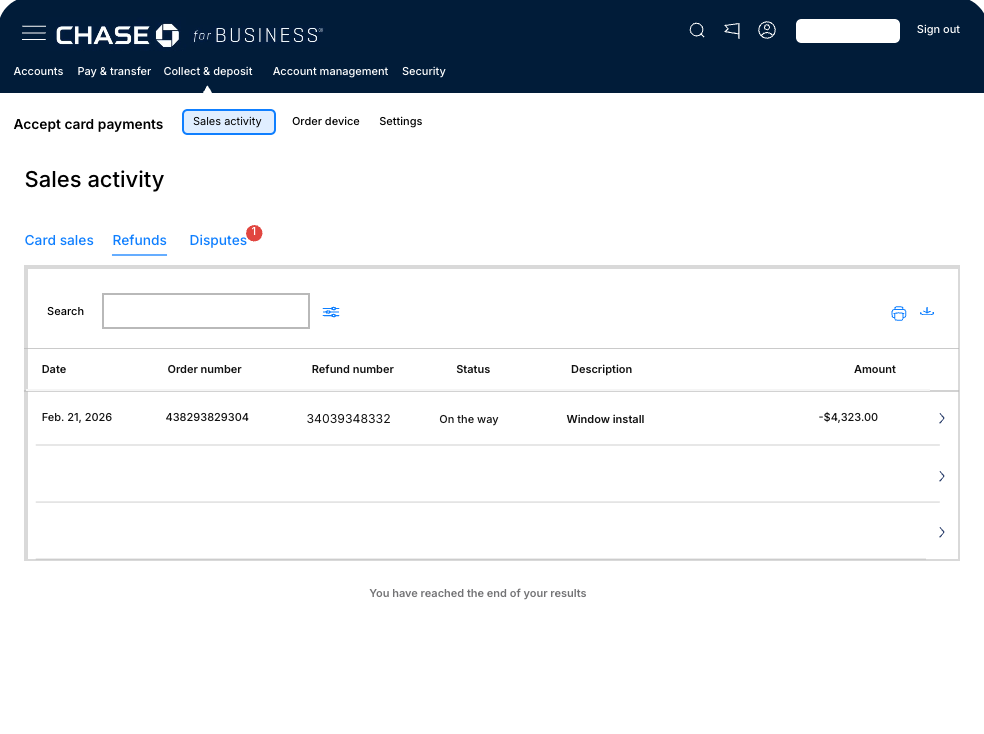
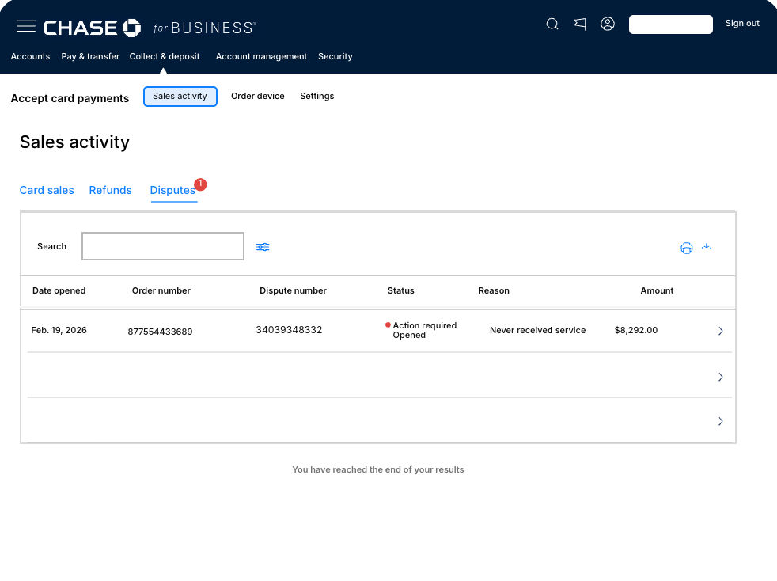

01. Background
Digging past the assumptions
Chase Payment Solutions gives small business merchants a dashboard to accept card payments, issue refunds, and manage disputes.
There were two reasons that led to this project being initiated. The backend was migrating to an order-based data structure, where a sale and its related refund or dispute share a group identifier. And the termination of our WePay vendor relationship gave us three months to bring the entire Disputes experience into Sales Activity.
There was an assumption that the new backend structure should be reflected in the customer facing UI. Before committing three months of design, I tested whether merchants actually thought that way.
They didn't.
02. Problem
Merchants did not understand how payments were related
The legacy table split transactions across two tabs, which were Card Sales and Refunds. Each tab's identification was easily understood, but the relationship between the two was not apparent.
When a merchant asked "where did my payment go?" they had to open one tab, find the sale, switch tabs, find the refund, and hold the reconstructed relationship within their memory. Disputes weren't in Sales Activity at all, they lived in a separate experience entirely, which meant a merchant could miss a chargeback deadline without ever knowing one existed.
Find
what transaction happened?Locate a specific transaction quickly.
Understand
what happened to it?Know the events connected to it.
Act
what needs me?Know when something needs a response.
The legacy design did the first job adequately and the other two not at all.
Problem Statement
Small business merchants using Chase Payment Solutions need to quickly verify payments. Merchants were forced to mentally reconstruct the story of a related event (i.e. a sale that was refunded) by cross-referencing records across multiple disconnected views. For time-sensitive actions like responding to a chargeback, that friction meant missing a deadline entirely without knowing one existed.
03. Question
The question was whether the merchants' mental model matched the grouped order structure
Based on the new backend order-based structure, a card sale, its refund, and any dispute against it share a common group identifier. The hypothesis was that exposing that grouping in the activity table would make transaction relationships clear to merchants.
Even with a three month deadline, it was important to allocate time for research and testing to avoid rushing a product that doesn't solve the problem.
I built three prototypes, each have a different interpretation of how the transaction's relationships were represented through the design. I tested each prototype against two tasks.
04. Testing
Rejected. Exploration 1: A shared identifier across tabs
If the order number appears on every related record, does the relationship become apparent?
The most conservative direction. I kept the existing tab structure and added a Disputes tab with its own columns: dispute number, reason, date opened, status. Every related record across all three tabs maintained the same order number.
An identifier isn't a relationship. The tab boundary was a stronger signal than the repeated number, and it overrode whatever connection the shared ID was meant to communicate.
Merchants navigated the tabs without difficulty, as that design was the same as before. When they were asked to find the original sale connected to a refund, none of merchants used the order number to do it. They read it as a unique ID per transaction regardless of the fact that it repeated across different types.


Rejected. Exploration 2: Structural nesting
If the relationship is expressed structurally rather than through a shared number, does it become legible?
Parent rows represented the original sale. By expanding a row it revealed child rows for related refunds or disputes transactions. By removing the tabs the shared identifier was not the only way to make the relationship, but not the hierarchy reinfornced it..
When merchants expanded the rows, they mistaken the child rows as itemized line items, the components that add up to an order total, rather than separate events that happened later.
Merchants recognized nested rows through the lens of viewing receipts and invoices, and that prior model was doing the interpreting. This direction also buried the one thing that most needed to be visible: an action-required dispute sitting inside a collapsed parent row.